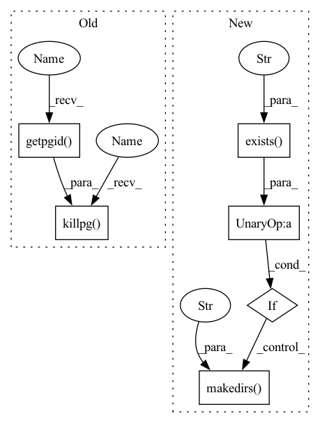

Pattern ID :42038

Before Change
visualization_url, process = start_bokeh_server_session(8001)
plotting_utils.visualize_relative_weight_ranges_single_layer(sess, conv_op, visualization_url)
os.killpg(os.getpgid(process.pid), signal.SIGTERM)
sess.close()
After Change
sess.run(init)
results_dir = "artifacts"
if not os.path.exists("artifacts"):
os.makedirs("artifacts")
conv_op = sess.graph.get_operation_by_name("conv1_conv/Conv2D")
plotting_utils.visualize_relative_weight_ranges_single_layer(sess, conv_op, results_dir)
In pattern: SUPERPATTERN
Frequency: 5
Non-data size: 6
Instances
Fragment ID: 117757756
Project Name: quic/aimet
Commit Name: 4230b257bd39fdac4ed432f995fcb69f4fa873b6
Time: 2021-07-08
Author: quic_mangal@quicinc.com
File Name: TrainingExtensions/tensorflow/test/python/test_visualization_per_layer.py
M Class Name: TFVisualization
N Class Name: TFVisualization
M Method Name: test_visualize_relative_weight_ranges_single_layer(1)
N Method Name: test_visualize_relative_weight_ranges_single_layer(1)
M Parent Class: unittest.TestCase
N Parent Class: unittest.TestCase
M File Name: TrainingExtensions/tensorflow/test/python/test_visualization_per_layer.py
N File Name: TrainingExtensions/tensorflow/test/python/test_visualization_per_layer.py
M Start Line: 86
M End Line: 88
N Start Line: 86
N End Line: 90
'>
Before Change
visualization_url, process = start_bokeh_server_session(8002)
bokeh_session = visualize_model.visualize_relative_weight_ranges_to_identify_problematic_layers(model, visualization_url)
bokeh_session.server_session.close("test complete")
os.killpg(os.getpgid(process.pid), signal.SIGTERM)
After Change
def test_line_plot_visualizations_per_layer(self):
results_dir = "artifacts"
if not os.path.exists("artifacts"):
os.makedirs("artifacts")
plot = visualize_model.visualize_relative_weight_ranges_to_identify_problematic_layers(model, results_dir)
'>
Fragment ID: 117757757
Project Name: quic/aimet
Commit Name: 60698ba1381d5c8bbbe287783cde618ddfffec0a
Time: 2021-07-08
Author: quic_mangal@quicinc.com
File Name: TrainingExtensions/torch/test/python/test_plots_bokeh.py
M Class Name: VisualizeNetwork
N Class Name: VisualizeNetwork
M Method Name: test_line_plot_visualizations_per_layer(1)
N Method Name: test_line_plot_visualizations_per_layer(1)
M Parent Class: unittest.TestCase
N Parent Class: unittest.TestCase
M File Name: TrainingExtensions/torch/test/python/test_plots_bokeh.py
N File Name: TrainingExtensions/torch/test/python/test_plots_bokeh.py
M Start Line: 145
M End Line: 148
N Start Line: 140
N End Line: 143
'>
Before Change
visualization_url, process = start_bokeh_server_session(8001)
plotting_utils.visualize_weight_ranges_single_layer(sess, conv_op, visualization_url)
os.killpg(os.getpgid(process.pid), signal.SIGTERM)
sess.close()
def test_visualize_relative_weight_ranges_single_layer(self):
After Change
sess.run(init)
results_dir = "artifacts"
if not os.path.exists("artifacts"):
os.makedirs("artifacts")
conv_op = sess.graph.get_operation_by_name("conv1_conv/Conv2D")
plotting_utils.visualize_weight_ranges_single_layer(sess, conv_op, results_dir)
'>
Fragment ID: 117757753
Project Name: quic/aimet
Commit Name: 4230b257bd39fdac4ed432f995fcb69f4fa873b6
Time: 2021-07-08
Author: quic_mangal@quicinc.com
File Name: TrainingExtensions/tensorflow/test/python/test_visualization_per_layer.py
M Class Name: TFVisualization
N Class Name: TFVisualization
M Method Name: test_visualize_weight_ranges_single_layer(1)
N Method Name: test_visualize_weight_ranges_single_layer(1)
M Parent Class: unittest.TestCase
N Parent Class: unittest.TestCase
M File Name: TrainingExtensions/tensorflow/test/python/test_visualization_per_layer.py
N File Name: TrainingExtensions/tensorflow/test/python/test_visualization_per_layer.py
M Start Line: 68
M End Line: 70
N Start Line: 66
N End Line: 70
'>
Before Change
equalize_model(model, (1, 3, 224, 224))
visualize_model.visualize_changes_after_optimization(model_copy, model, bokeh_visualizations_url)
bokeh_session.server_session.close("test complete")
os.killpg(os.getpgid(process.pid), signal.SIGTERM)
def test_cross_layer_equalization_resnet18_visualize_to_identify_problem_layers(self):
bokeh_visualizations_url, process = start_bokeh_server_session(6008)
torch.manual_seed(10)
After Change
model = model.eval()
model_copy = copy.deepcopy(model)
results_dir = "artifacts"
if not os.path.exists("artifacts"):
os.makedirs("artifacts")
// model_copy_again = copy.deepcopy(model)
batch_norm_fold.fold_all_batch_norms(model_copy, (1, 3, 224, 224))
equalize_model(model, (1, 3, 224, 224))
'>
Fragment ID: 117757754
Project Name: quic/aimet
Commit Name: 60698ba1381d5c8bbbe287783cde618ddfffec0a
Time: 2021-07-08
Author: quic_mangal@quicinc.com
File Name: NightlyTests/torch/test_cross_layer_equalization.py
M Class Name: TestCrossLayerEqualization
N Class Name: TestCrossLayerEqualization
M Method Name: test_cross_layer_equalization_mobilenet_v2_visualize_after_optimization(1)
N Method Name: test_cross_layer_equalization_mobilenet_v2_visualize_after_optimization(1)
M Parent Class: unittest.TestCase
N Parent Class: unittest.TestCase
M File Name: NightlyTests/torch/test_cross_layer_equalization.py
N File Name: NightlyTests/torch/test_cross_layer_equalization.py
M Start Line: 113
M End Line: 125
N Start Line: 111
N End Line: 116
'>
Before Change
visualize_model.visualize_relative_weight_ranges_to_identify_problematic_layers(model,
bokeh_visualizations_url)
bokeh_server_session.server_session.close("test complete")
os.killpg(os.getpgid(process.pid), signal.SIGTERM)
def test_cle_transposed_conv2D(self):
class TransposedConvModel(torch.nn.Module):
def __init__(self):
After Change
model = model.eval()
results_dir = "artifacts"
if not os.path.exists("artifacts"):
os.makedirs("artifacts")
batch_norm_fold.fold_all_batch_norms(model, (1, 3, 224, 224))
visualize_model.visualize_relative_weight_ranges_to_identify_problematic_layers(model, results_dir)
'>
Fragment ID: 117757755
Project Name: quic/aimet
Commit Name: 60698ba1381d5c8bbbe287783cde618ddfffec0a
Time: 2021-07-08
Author: quic_mangal@quicinc.com
File Name: NightlyTests/torch/test_cross_layer_equalization.py
M Class Name: TestCrossLayerEqualization
N Class Name: TestCrossLayerEqualization
M Method Name: test_cross_layer_equalization_resnet18_visualize_to_identify_problem_layers(1)
N Method Name: test_cross_layer_equalization_resnet18_visualize_to_identify_problem_layers(1)
M Parent Class: unittest.TestCase
N Parent Class: unittest.TestCase
M File Name: NightlyTests/torch/test_cross_layer_equalization.py
N File Name: NightlyTests/torch/test_cross_layer_equalization.py
M Start Line: 128
M End Line: 139
N Start Line: 123
N End Line: 131